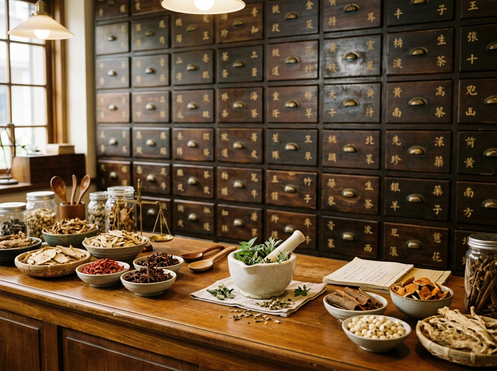

Restore Your Balance Through the Wisdom of Traditional Healing.
Immerse yourself in gentle, authentic Traditional Chinese Medicine. Through precision acupuncture, restorative cupping, and personalized botanical formulations, we awaken your body’s natural ability to heal from within.

An Ecological Approach to Your Whole Being
In Traditional Chinese Medicine, wellness is not merely the absence of disease—it is a harmonious dance between Yin and Yang, Qi flow, and the Five Elements. We treat the whole person, not just isolated symptoms.
Yin & Yang Equilibrium
Every physiological state requires balance between activity and rest, warmth and cooling. We identify constitutional excesses and depletions to guide you back to center.
Meridian & Qi Vitality
Twelve primary meridian channels coordinate blood circulation, nerve conduction, and immune defenses. Precision acupuncture removes blockages and restores uninterrupted flow.
Custom Botanical Synergy
Unlike single-ingredient supplements, classical Chinese herbal formulas are balanced symphonies compounded to nourish deep organ systems without harsh side effects.
Root-Cause Holistic Therapies
Each modality is selected according to your unique diagnostic pulse, tongue evaluation, and clinical presentation.
Acupuncture
$130 • 60 Min
Acupuncture Therapy
Sterile, hair-thin needle insertion along meridian pathways to relieve chronic pain, ease nervous tension, and reset autonomic homeostasis.
 Bodywork
$85 • 45 Min
Bodywork
$85 • 45 Min
Cupping Therapy
Traditional fire cupping creates gentle negative pressure to decompress restricted fascia, increase microcirculation, and release deep tension.

Herbal Medicine $95 • 40 MinHerbal Medicine Consultation
Custom botanical formulations prepared from third-party certified granules to address internal deficiencies, hormonal shifts, and digestive balance.
What to Expect During Your First Visit
Your healing journey is transparent, gentle, and unhurried. Here is how your first 75-minute consultation unfolds.
In-Depth Health Inquiry
We listen closely to your complete medical story, sleep patterns, emotional landscape, and physical sensations without rushing.
Pulse & Tongue Reading
Our practitioners assess your radial pulse qualities and examine tongue coating to reveal internal organ energetics and fluid balance.
Gentle Treatment Session
Relax on a heated linen table while hair-fine sterile needles or soothing cups are placed. Most patients drift into a restorative nap.
Personalized Care Roadmap
Receive your personalized treatment plan, dietary guidelines, and optional botanical prescription accessible in your online Patient Portal.
Guided by Experienced, Compassionate Healers
Licensed acupuncturists and board-certified Chinese herbalists with decades of verified clinical expertise.
Dr. Meilin Chen
DACM, L.Ac, Dipl. O.M. (NCCAOM) Pain Management • Spine HealthDr. Chen blends classical Five-Phase theory with modern neuro-functional acupuncture to resolve complex pain conditions, migraines, and nerve injuries.

Dr. Jonathan Wu
Dipl. O.M., MSTCM, L.Ac Chinese Herbal Medicine • DigestionMaster herbalist trained in classical formulas. Specializes in digestive disorders, IBS, metabolic exhaustion, and immune fortification.
Dr. Evelyn Zhao
DACM, L.Ac, FABORM Women's Health • Fertility • SleepFellow of the American Board of Oriental Reproductive Medicine. Empathetic care for hormonal balance, cycle regulation, fertility, and stress-induced insomnia.
Stories of Restored Vitality & Calm
Sample patient feedback demonstrating authentic clinical outcomes across our treatments.
"After months of debilitating desk-work neck tension and tension headaches, Dr. Chen’s combination of acupuncture and cupping brought relief I had not felt in years. The clinic is so quiet and peaceful."
"Dr. Wu's herbal formula was a game changer for my sluggish digestion and constant bloating. The granules dissolve easily in warm water, and within two weeks my energy levels soared."
"The patient portal is incredible—I can track every session of my treatment plan and view my herbal instructions with all precautions clearly detailed. Truly a gold standard clinic."
Ancient Wisdom for Modern Living
Explore seasonal dietetics, five-element philosophy, and holistic lifestyle practices written by our licensed practitioners.
Living with the Seasons: Autumn and Winter Wellness Through the Five Elements
Align your daily nutrition, sleep, and emotional rhythm with nature's cycles according to the ancient Five Elements: Wood, Fire, Earth, Metal, and Water.
 Seasonal Wellness
6 min read
Seasonal Wellness
6 min read
Harmonizing with Spring: Liver Qi Rejuvenation and Green Dietetics
As nature awakens in spring, learn how the Wood element and Liver meridian govern renewal, emotional release, and vibrant seasonal energy.
 TCM Fundamentals
8 min read
TCM Fundamentals
8 min read
Restoring the Shen: A TCM Blueprint for Deep, Restorative Sleep
When the Shen (spirit) wanders at night, insomnia and racing thoughts emerge. Discover acupressure points, nighttime rituals, and heart-harmonizing herbs.
Common Questions About Traditional Healing
Learn what to expect from acupuncture needles, safety standards, and herbal remedies.